# Clean environment:
rm(list = ls())
# Load packages
library("data.table")
library("metafor")
library("ggplot2")
library("ggstance")
library("orchaRd")
library("patchwork")
library("readxl")
library("stringr")
library("sf")
library("mapview")
library("dplyr")
library("rotl")
library("broom.mixed")
library("here")
# Load custom functions:
# This helps extract predictions on rma.mv objects:
rma_predictions <- function(m,
newgrid,
has_intercept = T){
if(!is.data.frame(newgrid)){errorCondition("ERROR newgrid must be a data frame")}
#create the new model matrix.
if(!all(unlist(lapply(names(newgrid), # lapply through names of newgrid to check that they're in formula
function(x) grepl(pattern=x,
x = as.character(m$formula.mods)[-1]))))){
errorCondition("ERROR: variables in newgrid are not in model formula")
}
# Drop levels that might be missing from the model...
cols <- names(newgrid)
coef_nms <- names(coef(m))
temp <- c()
if(has_intercept == F){
for(i in 1:length(cols)){
if(class(unlist(newgrid[, cols[i], with = F])) %in% c("factor", "character")){
temp <- paste0(names(newgrid[, cols[i], with = F]),
unlist(newgrid[, cols[i], with = F]))
newgrid <- newgrid[temp %in% coef_nms, ]
}
}
}
newgrid
# Create prediction matrix
predgrid <- (model.matrix(m$formula.mods, data=newgrid))
predgrid
if(any(grepl("intercept", colnames(predgrid),
ignore.case = TRUE))){
#if intercept is present, remove it?
predgrid <- predgrid[, -1]
}
# predict onto the new model matrix
pred.out <- as.data.frame(predict(m, newmods=predgrid))
#attach predictions to variables for plotting
final.pred <- cbind(newgrid, pred.out)
return(final.pred)
}
# This function creates a phylogenetic covariance matrix
createPhyloCorr <- function(spp_list, tree){
tree.filt <- keep.tip(tree, spp_list)
tree.br <- compute.brlen(tree.filt)
tree.corr <- vcv(tree.br, corr=T)
return(tree.corr)
}Run models and plot results
Now we’ll fit multilevel meta-analytic models in the R package metafor (Viechtbauer 2010). Given the non-independence structures in this data we will fit a series of models with increasingly complex random effects, particularly to control for phylogenetic similarity between prey species and to also deal with non-phylogenetic components of species identity. We’ll create a model guide to organize these models, as well as our subgroup analyses and sensitivity analyses. These analyses include:
- Only prey inside of cat’s prey range
- Only dominant effect sizes (e.g., excluding minority converted effect sizes)
- Habitat / locomotion / landform subgroup analyses
Note that instead of including habitat type, locomotion, or landform as categorical predictors, we used separate univariate (intercept-only) models on these subgroups of the data. In part this is to keep the code cleaner (the results are the same regardless) but also because in most cases there was only one factor level of these variables with sufficient data to estimate coefficients and we were not interested in testing for differences between factor levels.
Prepare environment
We’ll start by cleaning the environment and loading some custom functions
Let’s reload our dataset. We’ll clean up the article ID to be a bit friendlier as a text string in the models and we’ll add a variable to our dataset to specify whether the effect size type was dominant (for filtering out minority converted effect sizes). Finally, we’ll reshape our dataset to be long by our habitat and landform variables to make our models easier to succinctly fit:
# Load prepared data:
dat <- fread("builds/meta_analysis/analysis_ready_dataset.csv")
# Clean up the article ID a bit:
dat[, article_id := paste(word(Article, 1,
sep = "[[:space:][:punct:]]"),
.GRP),
by = .(Article)]
# Check that that didn't screw anything up:
length(unique(dat$Article)) == length(unique(dat$article_id))
nrow(dat[duplicated(article_id)]) == nrow(dat[duplicated(Article)])
# Must be TRUE
# >>> Add column for whether effect size type is dominant within analysis group --------
dat[, total_n_articles := uniqueN(article_id), by = .(analysis_group)]
dat[, n_articles_per_original_es := uniqueN(article_id), by = .(analysis_group,
original_effect_size)]
dat[, dominant_effect_size := ifelse((n_articles_per_original_es / total_n_articles) > .5,
"yes", "no")]
dat[, .(n = .N), by = .(dominant_effect_size)]
# >>> Make data long by habitat traits ------------------------------------
# Instead of having these as separate factors, let's do univariate subgroup models
dat.long <- melt(dat,
measure.vars = c("locomotion_volant",
"ground_or_burrow_resting_or_nesting",
"Foraging_habitat_ground", "continent_island"),
variable.name = "habitat_category",
value.name = "habitat_trait")
dat[, habitat_trait := "All"]
dat[, habitat_category := "All"]
dat.final <- rbind(dat[, !c("locomotion_volant",
"ground_or_burrow_resting_or_nesting",
"Foraging_habitat_ground", "continent_island"),
with = F],
dat.long)
head(dat.final)
# Now let's format these names and concatenate with variable type.
unique(dat.final[, .(habitat_category, habitat_trait)])
dat.final[habitat_trait != "All",
habitat_trait := paste0(habitat_category, ".",
habitat_trait)]The variable habitat_trait will allow for easy subgroup filtering as we fit our models.
Set up model guide
Now let’s create all the combinations of models we want to run. The function data.table::CJ is similar to expand.grid and makes all combinations of the input vectors. We’ll do this in two steps to avoid having to filter out some combinations that we don’t have sample size to run.
# # Do the guide in 2 steps. We don't have enough data for class * habitat sub-analyses.
guide <- CJ(analysis_group = unique(dat.final$analysis_group),
moderator = c("1", "log_mass"),
class = c("Birds", "Mammals", "Reptiles", "All"),
habitat_trait = "All",
prey_range = c("All", "inside"),
non_phylo_species = c("yes", "no"),
phylo_species = c("yes", "no"),
only_dominant_effect_size = c("yes", "no")
)
guide <- guide[!(moderator == "log_mass" & class != "All"), ]
guide2 <- CJ(analysis_group = unique(dat.final$analysis_group),
moderator = "1",
habitat_trait = c("locomotion_volant.non_volant",
"locomotion_volant.volant",
"ground_or_burrow_resting_or_nesting.other",
"ground_or_burrow_resting_or_nesting.ground",
"Foraging_habitat_ground.other",
"Foraging_habitat_ground.ground",
"continent_island.island",
"continent_island.mainland"),
class = c("All"),
prey_range = c("All"),
non_phylo_species = c("yes", "no"),
phylo_species = c("yes", "no"),
only_dominant_effect_size = c("no")
)
guide <- rbind(guide, guide2)Now we’ll add a unique ID that we’ll use to compare alternative random effects per model series (model_comparison_id). And we’ll formulate strings which we’ll evaluate as R code for our random effects (random_effect), to filter our dataset (exclusion) and for our fixed effect formula (formula):
guide[, model_comparison_id := paste0("model_comp_", .GRP),
by = .(analysis_group, class, moderator, prey_range,
habitat_trait, only_dominant_effect_size)]
guide[, random_effect := "list(~1|article_id/Effect_size_ID"]
guide[, random_effect := ifelse(non_phylo_species == "yes",
paste0(random_effect, ", ~1|scientificName"),
paste0(random_effect))]
guide[, random_effect := ifelse(phylo_species == "yes",
paste0(random_effect, ", ~1|phylo_species)"),
paste0(random_effect, ")"))]
guide
# Formulate exclusion formula:
guide[, exclusion := paste0("analysis_group == '", analysis_group, "'",
" & habitat_trait == '", habitat_trait, "'")]
guide[class != "All", exclusion := paste0(exclusion, " & class %in% '", class, "'")]
guide[prey_range == "inside",
exclusion := paste0(exclusion, " & prey_range_primary == 'inside'")]
guide[prey_range == "All"]
#
guide.m1 <- merge(guide,
unique(dat[, .(analysis_group, analysis_effect_size)]),
by = 'analysis_group',
all.x = T)
guide.m1[is.na(analysis_effect_size)]
guide.m1
#
guide.m1[only_dominant_effect_size == "yes",
exclusion := paste0(exclusion, " & dominant_effect_size == 'yes'")]
#
guide.m1[, formula := ifelse(moderator == "1",
"~ 1",
paste("~", moderator))]
guide.m1[, model_id := paste0("model_", seq(1:.N))]The resulting guide will execute 1,232 models and looks like this. exclusion, random_effect, and formula are text strings that we will evaluate to filter dataset and run models.
head(guide.m1)Key: <analysis_group>
analysis_group moderator class habitat_trait prey_range
<char> <char> <char> <char> <char>
1: Abundance before-after eradication 1 All All All
2: Abundance before-after eradication 1 All All All
3: Abundance before-after eradication 1 All All All
4: Abundance before-after eradication 1 All All All
5: Abundance before-after eradication 1 All All All
6: Abundance before-after eradication 1 All All All
non_phylo_species phylo_species only_dominant_effect_size
<char> <char> <char>
1: no no no
2: no no yes
3: no yes no
4: no yes yes
5: yes no no
6: yes no yes
model_comparison_id random_effect
<char> <char>
1: model_comp_1 list(~1|article_id/Effect_size_ID)
2: model_comp_2 list(~1|article_id/Effect_size_ID)
3: model_comp_1 list(~1|article_id/Effect_size_ID, ~1|phylo_species)
4: model_comp_2 list(~1|article_id/Effect_size_ID, ~1|phylo_species)
5: model_comp_1 list(~1|article_id/Effect_size_ID, ~1|scientificName)
6: model_comp_2 list(~1|article_id/Effect_size_ID, ~1|scientificName)
exclusion
<char>
1: analysis_group == 'Abundance before-after eradication' & habitat_trait == 'All'
2: analysis_group == 'Abundance before-after eradication' & habitat_trait == 'All' & dominant_effect_size == 'yes'
3: analysis_group == 'Abundance before-after eradication' & habitat_trait == 'All'
4: analysis_group == 'Abundance before-after eradication' & habitat_trait == 'All' & dominant_effect_size == 'yes'
5: analysis_group == 'Abundance before-after eradication' & habitat_trait == 'All'
6: analysis_group == 'Abundance before-after eradication' & habitat_trait == 'All' & dominant_effect_size == 'yes'
analysis_effect_size formula model_id
<char> <char> <char>
1: SMD ~ 1 model_1
2: SMD ~ 1 model_2
3: SMD ~ 1 model_3
4: SMD ~ 1 model_4
5: SMD ~ 1 model_5
6: SMD ~ 1 model_6Now we’ll filter out models for which we have insufficient sample size. We’ll do this by evaluating the exclusion strings as a subsetting operation on the dataset. We’ll be very generous with sample size inclusion criteria and will fit models if there are at least 2 observations for lnOR and SMD effect size analysis groups and 5 observations for models with a continuous moderator (body mass).
Ns <- list()
sub.dat <- c()
for(i in 1:nrow(guide.m1)){
sub.dat <- dat.final[eval(parse(text = guide.m1[i, ]$exclusion))]
Ns[[i]] <- sub.dat[, .(n_species = uniqueN(scientificName),
n_articles = uniqueN(Article),
n_obs = .N,
model_id = guide[i, ]$model_id,
analysis_group = guide[i, ]$analysis_group,
class = guide[i, ]$class)]
Ns[[i]]$model_id <- guide.m1[i, ]$model_id
}
Ns <- rbindlist(Ns)
guide.m2 <- merge(guide.m1,
Ns[, .(n_species, n_articles, n_obs, model_id)],
by = "model_id")
# More than 2 observations:
guide.m2 <- guide.m2[n_obs > 2, ]
# and at least 5 for continuous
guide.m2 <- guide.m2[!(moderator == "log_mass" & n_articles < 5), ]
head(guide.m2)If there is only 1 article per analysis group we will drop ’article_id` from the random effects:
guide.m2[n_articles == 1, random_effect := gsub("article_id/", "", random_effect)]
guide.m2Key: <model_id>
Index: <n_articles>
model_id analysis_group moderator class
<char> <char> <char> <char>
1: model_1 Abundance before-after eradication 1 All
2: model_1009 Reproduction temporal association 1 All
3: model_101 Abundance before-after eradication 1 All
4: model_1010 Reproduction temporal association 1 All
5: model_1011 Reproduction temporal association 1 All
---
412: model_89 Abundance before-after eradication 1 All
413: model_9 Abundance before-after eradication 1 All
414: model_90 Abundance before-after eradication 1 All
415: model_91 Abundance before-after eradication 1 All
416: model_92 Abundance before-after eradication 1 All
habitat_trait prey_range non_phylo_species
<char> <char> <char>
1: All All no
2: All All no
3: ground_or_burrow_resting_or_nesting.other All no
4: All All no
5: All All no
---
412: continent_island.island All no
413: All inside no
414: continent_island.island All no
415: continent_island.island All yes
416: continent_island.island All yes
phylo_species only_dominant_effect_size model_comparison_id
<char> <char> <char>
1: no no model_comp_1
2: no no model_comp_181
3: no no model_comp_226
4: no yes model_comp_182
5: yes no model_comp_181
---
412: no no model_comp_223
413: no no model_comp_3
414: yes no model_comp_223
415: no no model_comp_223
416: yes no model_comp_223
random_effect
<char>
1: list(~1|article_id/Effect_size_ID)
2: list(~1|Effect_size_ID)
3: list(~1|article_id/Effect_size_ID)
4: list(~1|Effect_size_ID)
5: list(~1|Effect_size_ID, ~1|phylo_species)
---
412: list(~1|article_id/Effect_size_ID)
413: list(~1|article_id/Effect_size_ID)
414: list(~1|article_id/Effect_size_ID, ~1|phylo_species)
415: list(~1|article_id/Effect_size_ID, ~1|scientificName)
416: list(~1|article_id/Effect_size_ID, ~1|scientificName, ~1|phylo_species)
exclusion
<char>
1: analysis_group == 'Abundance before-after eradication' & habitat_trait == 'All'
2: analysis_group == 'Reproduction temporal association' & habitat_trait == 'All'
3: analysis_group == 'Abundance before-after eradication' & habitat_trait == 'ground_or_burrow_resting_or_nesting.other'
4: analysis_group == 'Reproduction temporal association' & habitat_trait == 'All' & dominant_effect_size == 'yes'
5: analysis_group == 'Reproduction temporal association' & habitat_trait == 'All'
---
412: analysis_group == 'Abundance before-after eradication' & habitat_trait == 'continent_island.island'
413: analysis_group == 'Abundance before-after eradication' & habitat_trait == 'All' & prey_range_primary == 'inside'
414: analysis_group == 'Abundance before-after eradication' & habitat_trait == 'continent_island.island'
415: analysis_group == 'Abundance before-after eradication' & habitat_trait == 'continent_island.island'
416: analysis_group == 'Abundance before-after eradication' & habitat_trait == 'continent_island.island'
analysis_effect_size formula n_species n_articles n_obs
<char> <char> <int> <int> <int>
1: SMD ~ 1 2 2 3
2: Zr ~ 1 1 1 4
3: SMD ~ 1 2 2 3
4: Zr ~ 1 1 1 4
5: Zr ~ 1 1 1 4
---
412: SMD ~ 1 2 2 3
413: SMD ~ 1 2 2 3
414: SMD ~ 1 2 2 3
415: SMD ~ 1 2 2 3
416: SMD ~ 1 2 2 3To facilitate model fitting and tidying we’ll also set up a prediction grid for extracting predictions for our only moderator, log mass.
Prepare phylogeny
Now we’ll prepare a phylogeny using the rotl package (OpenTreeOfLife et al. 2019). This will download a phylo object and we will merge in the tip ID to our dataset (dat.final)
dat.final[, spp_name_corrected := scientificName]
dat.final[scientificName == "Pampusana erythroptera",
spp_name_corrected := "Gallicolumba erythroptera"]
nms <- unique(dat.final$spp_name_corrected)
nms_res <- rotl::tnrs_match_names(nms)
#
tree <- tol_induced_subtree(ott_ids = nms_res$ott_id)
Progress [---------------------------------] 0/302 ( 0%) ?s
Progress [==============================] 302/302 (100%) 0s
plot(tree)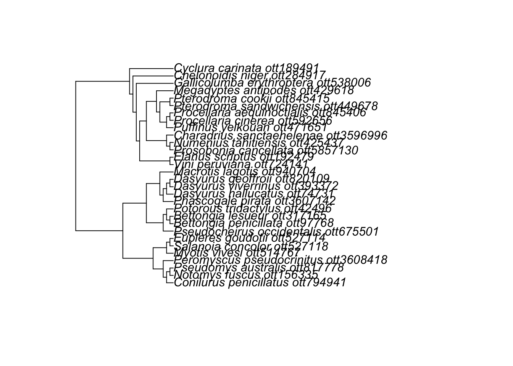
character(0)setdiff(tree$tip.label, nms_res$label)character(0)nms_res[, search_string := str_to_sentence(search_string)]
setdiff(nms_res$search_string, dat$spp_name_corrected) [1] "Cyclura carinata" "Dasyurus geoffroii"
[3] "Macrotis lagotis" "Pseudomys australis"
[5] "Bettongia lesueur" "Bettongia penicillata"
[7] "Pseudocheirus occidentalis" "Myotis vivesi"
[9] "Notomys fuscus" "Conilurus penicillatus"
[11] "Dasyurus hallucatus" "Phascogale pirata"
[13] "Salanoia concolor" "Eupleres goudotii"
[15] "Chelonoidis niger" "Pterodroma cookii"
[17] "Procellaria aequinoctialis" "Puffinus yelkouan"
[19] "Dasyurus viverrinus" "Elanus scriptus"
[21] "Potorous tridactylus" "Procellaria cinerea"
[23] "Prosobonia cancellata" "Gallicolumba erythroptera"
[25] "Numenius tahitiensis" "Charadrius sanctaehelenae"
[27] "Megadyptes antipodes" "Vini peruviana"
[29] "Pterodroma sandwichensis" "Peromyscus pseudocrinitus" setdiff(dat.final$spp_name_corrected, nms_res$search_string)character(0)[1] TRUEsetnames(dat.final.m, "label", "phylo_species")Run models
Finally, let’s run the models. We’ll save the raw model objects in a list() object named models, the predictions in a list() object named predictions and tidied tables of model coefficients in a list() called tidy_models.
In total, we have 416 models to run. Many of these will not fit because they have tiny sample sizes and complex non-independence structures (with the phylogeny and species identity random effects especially). However, we’ll give it a try. The model fitting is done by metafor::rma.mv.
# Clean up the objects in the environment:
guide <- copy(guide.m2)
dat <- copy(dat.final.m)
rm(guide.m2, guide.m1, dat.final.m)
models <- list()
predictions <- list()
tidy_models <- list()
for(i in 1:nrow(guide)){
sub_guide <- guide[i, ]
sub_guide
dat.sub <- dat[eval(parse(text = sub_guide$exclusion))]
dat.sub
#
#
models[[i]] <- try({
if(sub_guide$phylo_species == "yes"){
rma.mv(yi_analysis,
V = vi_analysis,
mods = as.formula(sub_guide$formula),
random = eval(parse(text = sub_guide$random_effect)),
dfs = "contain",
test = "t",
method = "REML",
R = list(phylo_species = createPhyloCorr(dat.sub$phylo_species, tree)),
data = dat.sub)
} else{
rma.mv(yi_analysis,
V = vi_analysis,
mods = as.formula(sub_guide$formula),
random = eval(parse(text = sub_guide$random_effect)),
dfs = "contain",
test = "t",
method = "REML",
data = dat.sub)
}
})
if(inherits(models[[i]], "try-error")){
models[[i]] <- as.character(models[[i]])
}else{
if(sub_guide$moderator == "1"){
predictions[[i]] <- predict(models[[i]]) |>
as.data.frame() |>
bind_cols(sub_guide) |>
rename(lower_ci = ci.lb,
upper_ci = ci.ub,
lower_pi = pi.lb,
upper_pi = pi.ub) |>
setDT()
}else{
predictions[[i]] <- rma_predictions(models[[i]], grids[[sub_guide$moderator]]) |>
rename("term" = sub_guide$moderator) |>
bind_cols(sub_guide) |>
rename(lower_ci = ci.lb,
upper_ci = ci.ub,
lower_pi = pi.lb,
upper_pi = pi.ub) |>
setDT()
}
tidy_models[[i]] <- tidy(models[[i]]) |>
mutate(lower_ci = models[[i]]$ci.lb,
upper_ci = models[[i]]$ci.ub,
df = unique(models[[i]]$ddf)) |>
mutate(overfit = ifelse(any(models[[i]]$sigma2 == 0), "yes", "no"),
aic = AIC(models[[i]])) |>
bind_cols(as.data.frame(i2_ml(models[[i]])) |> t() ) |>
bind_cols(sub_guide) |>
setDT()
cat(i, "/", nrow(guide), "\r")
names(predictions)[i] <- sub_guide$model_id
names(tidy_models)[i] <- sub_guide$model_id
# names(models[i]) <- tidy_models[i]$model_id
}
}Model selection
Now we’ll select the best model per each analysis group, moderator, subgroup, and sensitivity analysis category (specified with model_comparison_id). We’ll also filter out overfit models by removing any with a sigma equal to 0 (which has been designated with the column overfit.
names(models) <- guide$model_id
setdiff(names(tidy_models[[2]]), names(tidy_models[[1]]))
tidy_models <- rbindlist(tidy_models, fill = TRUE)
tidy_models[overfit == "yes", ]
tidy_models <- tidy_models[overfit != "yes", ]
length(predictions)
predictions <- rbindlist(predictions, fill = TRUE)
predictions
names(models)
# >>> Select best model ---------------------------------------------------
tidy_models[, min_aic := min(aic),
by = .(model_comparison_id)]
tidy_models <- tidy_models[min_aic == aic, ]
tidy_models[overfit == "yes", ]
predictions <- predictions[model_id %in% tidy_models$model_id]
predictionsPlots
Now let’s plot our results.
First let’s clean up the labels and format factor levels for the plots:
predictions[, string := paste0(analysis_effect_size, ": ", n_articles, "(", n_species, ", ", n_obs, ")")]
predictions
dat[, analysis_group_lab := gsub("Abundance ", "", analysis_group)]
dat[, analysis_group_lab := gsub("Reproduction ", "", analysis_group_lab)]
dat[, analysis_group_lab := str_to_sentence(analysis_group_lab)]
predictions[, analysis_group_lab := gsub("Abundance ", "", analysis_group)]
predictions[, analysis_group_lab := gsub("Reproduction ", "", analysis_group_lab)]
predictions[, analysis_group_lab := str_to_sentence(analysis_group_lab)]
predictions
dput(sort(unique(dat$analysis_group_lab)))
lvls <- c("With/without cats",
"Before-after eradication", "Inside/outside exclosure", "On islands with/without cats",
"Spatial association", "Temporal association")
dat$analysis_group_lab <- factor(dat$analysis_group_lab,
levels = rev(lvls))
predictions$analysis_group_lab <- factor(predictions$analysis_group_lab,
levels = rev(lvls))Main text models
Now let’s plot the main text intercept-only models:
intercepts <- predictions[moderator == "1" &
only_dominant_effect_size == "no" &
class == "All" &
habitat_trait == "All" &
prey_range == "All"]
intercepts pred se lower_ci upper_ci lower_pi upper_pi
<num> <num> <num> <num> <num> <num>
1: -1.14779672 0.8899962 -12.4562705 10.1606771 -18.8539942 16.5584008
2: 0.09103702 0.2236068 -0.6205796 0.8026536 -0.6205796 0.8026536
3: -0.33801567 0.7213376 -3.4416810 2.7656496 -6.1585790 5.4825476
4: -0.16354233 0.5723212 -1.5639618 1.2368771 -2.9584721 2.6313874
5: 0.10062413 0.4245958 -1.2506293 1.4518775 -2.4787553 2.6800035
6: 0.06095260 0.2159664 -0.4202505 0.5421557 -1.4863584 1.6082637
7: -0.45750464 0.3122015 -1.1637535 0.2487443 -2.3370662 1.4220569
8: 0.16231033 0.4438215 -5.4769768 5.8015975 -8.6943334 9.0189540
model_id analysis_group moderator class
<char> <char> <char> <char>
1: model_1 Abundance before-after eradication 1 All
2: model_1009 Reproduction temporal association 1 All
3: model_1121 Reproduction with/without cats 1 All
4: model_225 Abundance on islands with/without cats 1 All
5: model_337 Abundance spatial association 1 All
6: model_449 Abundance temporal association 1 All
7: model_561 Abundance with/without cats 1 All
8: model_673 Reproduction before-after eradication 1 All
habitat_trait prey_range non_phylo_species phylo_species
<char> <char> <char> <char>
1: All All no no
2: All All no no
3: All All no no
4: All All no no
5: All All no no
6: All All no no
7: All All no no
8: All All no no
only_dominant_effect_size model_comparison_id
<char> <char>
1: no model_comp_1
2: no model_comp_181
3: no model_comp_201
4: no model_comp_41
5: no model_comp_61
6: no model_comp_81
7: no model_comp_101
8: no model_comp_121
random_effect
<char>
1: list(~1|article_id/Effect_size_ID)
2: list(~1|Effect_size_ID)
3: list(~1|article_id/Effect_size_ID)
4: list(~1|article_id/Effect_size_ID)
5: list(~1|article_id/Effect_size_ID)
6: list(~1|article_id/Effect_size_ID)
7: list(~1|article_id/Effect_size_ID)
8: list(~1|article_id/Effect_size_ID)
exclusion
<char>
1: analysis_group == 'Abundance before-after eradication' & habitat_trait == 'All'
2: analysis_group == 'Reproduction temporal association' & habitat_trait == 'All'
3: analysis_group == 'Reproduction with/without cats' & habitat_trait == 'All'
4: analysis_group == 'Abundance on islands with/without cats' & habitat_trait == 'All'
5: analysis_group == 'Abundance spatial association' & habitat_trait == 'All'
6: analysis_group == 'Abundance temporal association' & habitat_trait == 'All'
7: analysis_group == 'Abundance with/without cats' & habitat_trait == 'All'
8: analysis_group == 'Reproduction before-after eradication' & habitat_trait == 'All'
analysis_effect_size formula n_species n_articles n_obs term
<char> <char> <int> <int> <int> <num>
1: SMD ~ 1 2 2 3 NA
2: Zr ~ 1 1 1 4 NA
3: lnOR ~ 1 3 3 5 NA
4: lnOR ~ 1 11 7 11 NA
5: Zr ~ 1 2 4 4 NA
6: Zr ~ 1 13 11 19 NA
7: SMD ~ 1 13 10 15 NA
8: SMD ~ 1 3 2 3 NA
string analysis_group_lab
<char> <fctr>
1: SMD: 2(2, 3) Before-after eradication
2: Zr: 1(1, 4) Temporal association
3: lnOR: 3(3, 5) With/without cats
4: lnOR: 7(11, 11) On islands with/without cats
5: Zr: 4(2, 4) Spatial association
6: Zr: 11(13, 19) Temporal association
7: SMD: 10(13, 15) With/without cats
8: SMD: 2(3, 3) Before-after eradicationunique(intercepts$analysis_group)[1] "Abundance before-after eradication"
[2] "Reproduction temporal association"
[3] "Reproduction with/without cats"
[4] "Abundance on islands with/without cats"
[5] "Abundance spatial association"
[6] "Abundance temporal association"
[7] "Abundance with/without cats"
[8] "Reproduction before-after eradication" pred se lower_ci upper_ci lower_pi upper_pi
<num> <num> <num> <num> <num> <num>
1: -1.14779672 0.8899962 -12.4562705 10.1606771 -18.8539942 16.5584008
2: 0.09103702 0.2236068 -0.6205796 0.8026536 -0.6205796 0.8026536
3: -0.33801567 0.7213376 -3.4416810 2.7656496 -6.1585790 5.4825476
4: -0.16354233 0.5723212 -1.5639618 1.2368771 -2.9584721 2.6313874
5: 0.10062413 0.4245958 -1.2506293 1.4518775 -2.4787553 2.6800035
6: 0.06095260 0.2159664 -0.4202505 0.5421557 -1.4863584 1.6082637
7: -0.45750464 0.3122015 -1.1637535 0.2487443 -2.3370662 1.4220569
8: 0.16231033 0.4438215 -5.4769768 5.8015975 -8.6943334 9.0189540
model_id analysis_group moderator class
<char> <char> <char> <char>
1: model_1 Abundance before-after eradication 1 All
2: model_1009 Reproduction temporal association 1 All
3: model_1121 Reproduction with/without cats 1 All
4: model_225 Abundance on islands with/without cats 1 All
5: model_337 Abundance spatial association 1 All
6: model_449 Abundance temporal association 1 All
7: model_561 Abundance with/without cats 1 All
8: model_673 Reproduction before-after eradication 1 All
habitat_trait prey_range non_phylo_species phylo_species
<char> <char> <char> <char>
1: All All no no
2: All All no no
3: All All no no
4: All All no no
5: All All no no
6: All All no no
7: All All no no
8: All All no no
only_dominant_effect_size model_comparison_id
<char> <char>
1: no model_comp_1
2: no model_comp_181
3: no model_comp_201
4: no model_comp_41
5: no model_comp_61
6: no model_comp_81
7: no model_comp_101
8: no model_comp_121
random_effect
<char>
1: list(~1|article_id/Effect_size_ID)
2: list(~1|Effect_size_ID)
3: list(~1|article_id/Effect_size_ID)
4: list(~1|article_id/Effect_size_ID)
5: list(~1|article_id/Effect_size_ID)
6: list(~1|article_id/Effect_size_ID)
7: list(~1|article_id/Effect_size_ID)
8: list(~1|article_id/Effect_size_ID)
exclusion
<char>
1: analysis_group == 'Abundance before-after eradication' & habitat_trait == 'All'
2: analysis_group == 'Reproduction temporal association' & habitat_trait == 'All'
3: analysis_group == 'Reproduction with/without cats' & habitat_trait == 'All'
4: analysis_group == 'Abundance on islands with/without cats' & habitat_trait == 'All'
5: analysis_group == 'Abundance spatial association' & habitat_trait == 'All'
6: analysis_group == 'Abundance temporal association' & habitat_trait == 'All'
7: analysis_group == 'Abundance with/without cats' & habitat_trait == 'All'
8: analysis_group == 'Reproduction before-after eradication' & habitat_trait == 'All'
analysis_effect_size formula n_species n_articles n_obs term
<char> <char> <int> <int> <int> <num>
1: SMD ~ 1 2 2 3 NA
2: Zr ~ 1 1 1 4 NA
3: lnOR ~ 1 3 3 5 NA
4: lnOR ~ 1 11 7 11 NA
5: Zr ~ 1 2 4 4 NA
6: Zr ~ 1 13 11 19 NA
7: SMD ~ 1 13 10 15 NA
8: SMD ~ 1 3 2 3 NA
string analysis_group_lab
<char> <fctr>
1: SMD: 2(2, 3) Before-after eradication
2: Zr: 1(1, 4) Temporal association
3: lnOR: 3(3, 5) With/without cats
4: lnOR: 7(11, 11) On islands with/without cats
5: Zr: 4(2, 4) Spatial association
6: Zr: 11(13, 19) Temporal association
7: SMD: 10(13, 15) With/without cats
8: SMD: 2(3, 3) Before-after eradicationintercepts$analysis_effect_size[1] "SMD" "Zr" "lnOR" "lnOR" "Zr" "Zr" "SMD" "SMD" p.abund <- ggplot()+
geom_vline(xintercept = 0, linetype = "dashed")+
geom_text(data = intercepts[grepl("abundance", analysis_group, ignore.case = T)],
aes(y = analysis_group_lab,
x = -6, vjust = 2,
label = string),
color = "grey50",
size = 3)+
geom_jitter(data = dat.plot[grepl("abundance", analysis_group, ignore.case = T), ],
aes(x = yi, y = analysis_group_lab,
size = 1/vi_analysis, fill = yi_analysis),
shape = 21, #fill = "grey90",
height = 0.25, width = 0,
alpha = .5)+
scale_fill_gradient2(low = "dodgerblue", high = "indianred",
midpoint = 0, mid = "white")+
guides(size = "none", fill = "none")+
geom_errorbar(data = intercepts[grepl("abundance", analysis_group, ignore.case = T)],
aes(y = analysis_group_lab,
xmin = lower_ci, xmax = upper_ci),
width = .25)+
geom_pointrange(data = intercepts[grepl("abundance", analysis_group, ignore.case = T)],
aes(x = pred, y = analysis_group_lab,
xmin = lower_pi, xmax = upper_pi),
shape = 21, fill = "grey50",
size = 1)+
ggtitle("Abundance")+
scale_y_discrete(breaks = c("With/without cats",
"Before-after eradication", "Inside/outside exclosure", "On islands with/without cats",
"Spatial association", "Temporal association"),
labels = c("With-without cats",
"Before-after eradication", "Inside-outside exclosure",
"Islands with-without cats",
"Spatial association", "Temporal association"))+
ylab(NULL)+
xlab("Association between cats and\nthreatened species abundance")+
guides(size = "none")+
theme_bw()+
theme(panel.grid = element_blank(),
plot.title = element_text(hjust = 0.5),
legend.position = "bottom",
strip.placement = "outside",
strip.background = element_blank(),
panel.border = element_blank())
p.reprod <- ggplot()+
geom_vline(xintercept = 0, linetype = "dashed")+
geom_text(data = intercepts[grepl("reproduction", analysis_group, ignore.case = T)],
aes(y = analysis_group_lab,
x = -3, vjust = 2,
label = string),
color = "grey50",
size = 3)+
geom_jitter(data = dat.plot[grepl("reproduction", analysis_group, ignore.case = T), ],
aes(x = yi, y = analysis_group_lab,
size = 1/vi_analysis, fill = yi_analysis),
shape = 21, #fill = "grey90",
height = 0.25, width = 0,
alpha = .5)+
scale_fill_gradient2(low = "dodgerblue", high = "indianred",
midpoint = 0, mid = "white")+
guides(size = "none", fill = "none")+
geom_errorbar(data = intercepts[grepl("reproduction", analysis_group, ignore.case = T)],
aes(y = analysis_group_lab,
xmin = lower_ci, xmax = upper_ci),
width = .25)+
geom_pointrange(data = intercepts[grepl("reproduction", analysis_group, ignore.case = T)],
aes(x = pred, y = analysis_group_lab,
xmin = lower_pi, xmax = upper_pi),
shape = 21, fill = "grey50",
size = 1)+
ggtitle("Bird reproduction")+
ylab(NULL)+
xlab("Association between cats and\nthreatened bird reproduction")+
scale_y_discrete(breaks = c("With/without cats",
"Before-after eradication", "Inside/outside exclosure", "On islands with/without cats",
"Spatial association", "Temporal association"),
labels = c("With-without cats",
"Before-after eradication", "Inside-outside exclosure",
"Islands with-without cats",
"Spatial association", "Temporal association"))+
guides(size = "none")+
theme_bw()+
theme(panel.grid = element_blank(),
plot.title = element_text(hjust = 0.5),
legend.position = "bottom",
strip.placement = "outside",
strip.background = element_blank(),
panel.border = element_blank())
p.abund + p.reprod +
plot_layout(nrow = 2,
heights = c(5/7, 2/7))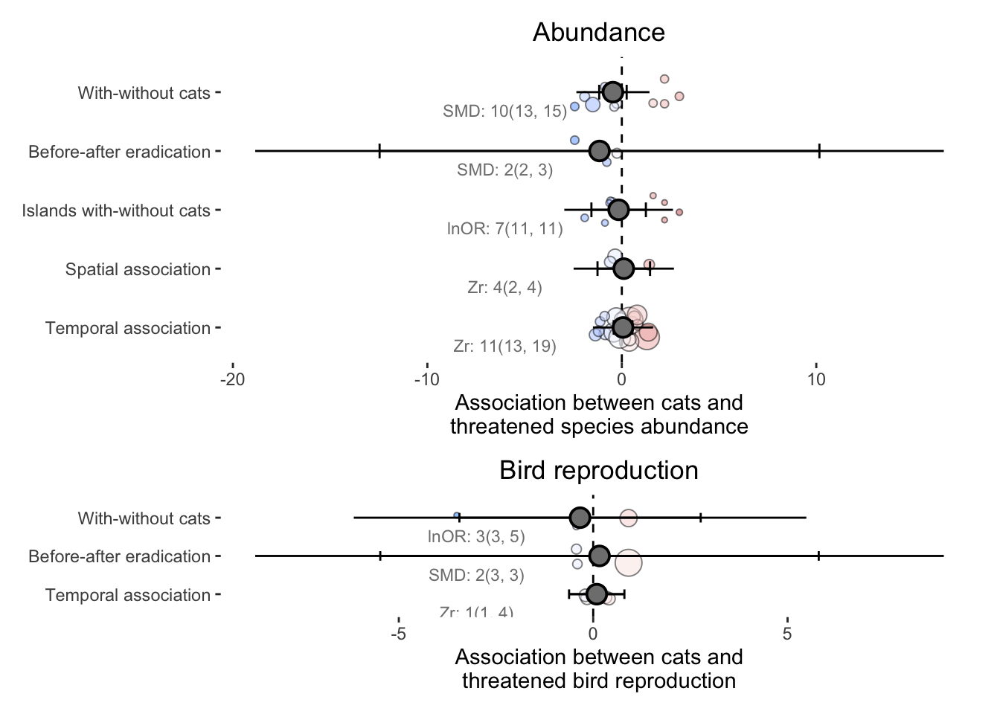
Inside prey-range models
intercept_inside <- predictions[moderator == "1" &
habitat_trait == "All" &
only_dominant_effect_size == "no" &
class == "All" &
prey_range == "inside", ]
dat.prey <- dat[analysis_group %in% unique(intercept_inside$analysis_group) &
habitat_trait == "All", ]
dat.prey <- dat.plot[prey_range_primary == "inside"]
intercept_inside$analysis_effect_size[1] "Zr" "lnOR" "lnOR" "Zr" "Zr" "SMD" "SMD" "SMD" p.abund.inside <- ggplot()+
geom_vline(xintercept = 0, linetype = "dashed")+
geom_text(data = intercept_inside[grepl("abundance", analysis_group, ignore.case = T)],
aes(y = analysis_group_lab,
x = -6, vjust = 2,
label = string),
color = "grey50",
size = 3)+
geom_jitter(data = dat.prey[grepl("abundance", analysis_group, ignore.case = T), ],
aes(x = yi, y = analysis_group_lab,
size = 1/vi_analysis, fill = yi_analysis),
shape = 21, #fill = "grey90",
height = 0.25, width = 0,
alpha = .5)+
scale_fill_gradient2(low = "dodgerblue", high = "indianred",
midpoint = 0, mid = "white")+
guides(size = "none", fill = "none")+
geom_errorbar(data = intercept_inside[grepl("abundance", analysis_group, ignore.case = T)],
aes(y = analysis_group_lab,
xmin = lower_ci, xmax = upper_ci),
width = .25)+
geom_pointrange(data = intercept_inside[grepl("abundance", analysis_group, ignore.case = T)],
aes(x = pred, y = analysis_group_lab,
xmin = lower_pi, xmax = upper_pi),
shape = 21, fill = "grey50",
size = 1)+
ggtitle("Abundance")+
scale_y_discrete(breaks = c("With/without cats",
"Before-after eradication", "Inside/outside exclosure", "On islands with/without cats",
"Spatial association", "Temporal association"),
labels = c("With-without cats",
"Before-after eradication", "Inside-outside exclosure",
"Islands with-without cats",
"Spatial association", "Temporal association"))+
ylab(NULL)+
xlab("Association between cats and threatened species")+
guides(size = "none")+
theme_bw()+
theme(panel.grid = element_blank(),
plot.title = element_text(hjust = 0.5),
legend.position = "bottom",
strip.placement = "outside",
strip.background = element_blank(),
panel.border = element_blank())
p.abund.inside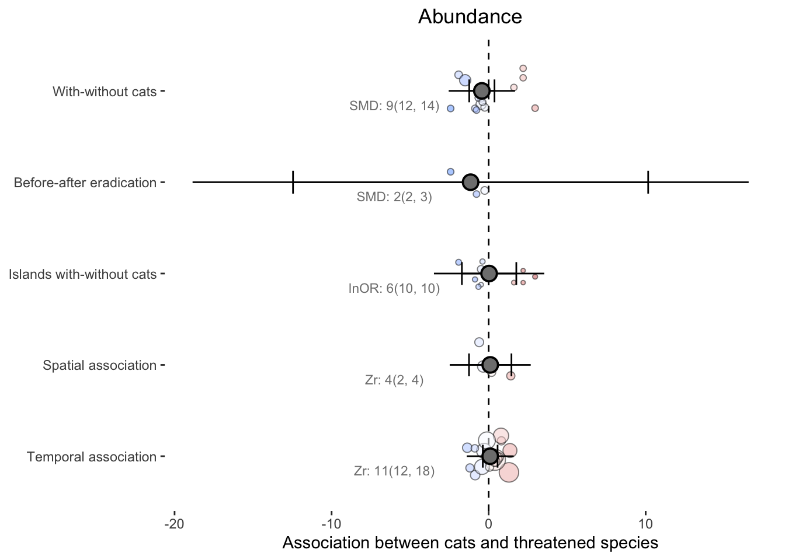
p.reprod.inside <- ggplot()+
geom_vline(xintercept = 0, linetype = "dashed")+
geom_text(data = intercept_inside[grepl("reproduction", analysis_group, ignore.case = T)],
aes(y = analysis_group_lab,
x = -5, vjust = 2.5,
label = string),
color = "grey50",
size = 3)+
geom_jitter(data = dat.prey[grepl("reproduction", analysis_group, ignore.case = T), ],
aes(x = yi, y = analysis_group_lab,
size = 1/vi_analysis, fill = yi_analysis),
shape = 21, #fill = "grey90",
height = 0.25, width = 0,
alpha = .5)+
scale_fill_gradient2(low = "dodgerblue", high = "indianred",
midpoint = 0, mid = "white")+
guides(size = "none", fill = "none")+
geom_errorbar(data = intercept_inside[grepl("reproduction", analysis_group, ignore.case = T)],
aes(y = analysis_group_lab,
xmin = lower_ci, xmax = upper_ci),
width = .25)+
geom_pointrange(data = intercept_inside[grepl("reproduction", analysis_group, ignore.case = T)],
aes(x = pred, y = analysis_group_lab,
xmin = lower_pi, xmax = upper_pi),
shape = 21, fill = "grey50",
size = 1)+
ggtitle("Bird reproduction")+
ylab(NULL)+
xlab("Association between cats and threatened bird reproduction")+
scale_y_discrete(breaks = c("With/without cats",
"Before-after eradication", "Inside/outside exclosure", "On islands with/without cats",
"Spatial association", "Temporal association"),
labels = c("With-without cats",
"Before-after eradication", "Inside-outside exclosure",
"Islands with-without cats",
"Spatial association", "Temporal association"))+
guides(size = "none")+
theme_bw()+
theme(panel.grid = element_blank(),
plot.title = element_text(hjust = 0.5),
legend.position = "bottom",
strip.placement = "outside",
strip.background = element_blank(),
panel.border = element_blank())
p.reprod.inside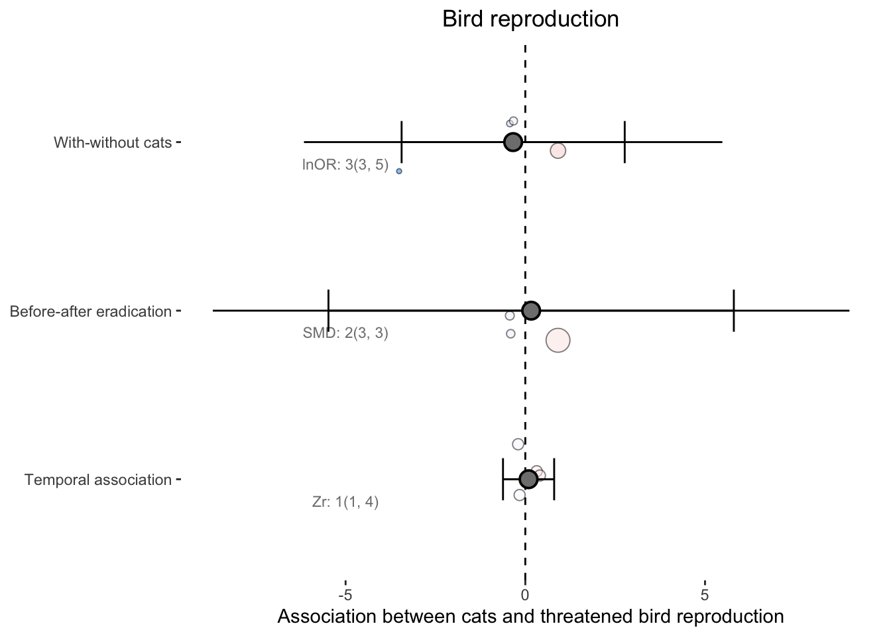
p.inside <- p.abund.inside + p.reprod.inside + plot_layout(ncol = 1,
heights = c(5/8, 3/8)) +
plot_annotation(tag_levels = "A")
p.inside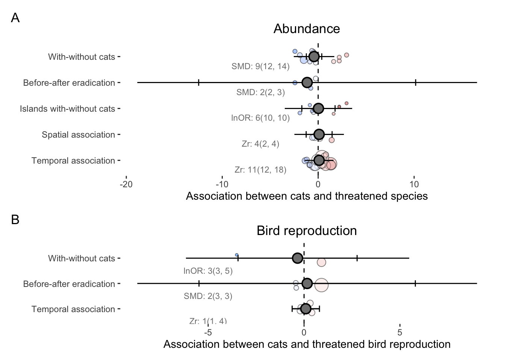
Class specific models
Note that we only ran these for abundance since all reproduction analyses groups were focused on birds:
#
class_pred <- predictions[moderator == "1" & class != "All" &
habitat_trait == "All" &
only_dominant_effect_size == "no" &
prey_range == "All"]
unique(class_pred$class)[1] "Birds" "Mammals"dat.plot <- dat[grepl("abundance", analysis_group, ignore.case = T) &
habitat_trait == "All" &
analysis_group %in% class_pred$analysis_group &
class %in% class_pred$class, ]
class.abundance <- ggplot()+
geom_vline(xintercept = 0, linetype = "dashed")+
geom_text(data = class_pred[grepl("abundance", analysis_group, ignore.case = T)],
aes(y = analysis_group_lab,
x = -15, vjust = 2,
label = string),
color = "grey50",
size = 3)+
geom_jitter(data = dat.plot,
aes(x = yi, y = analysis_group_lab,
size = 1/vi_analysis, fill = yi_analysis),
shape = 21, #fill = "grey90",
height = 0.25, width = 0,
alpha = .5)+
scale_fill_gradient2(low = "dodgerblue", high = "indianred",
midpoint = 0, mid = "white")+
guides(size = "none", fill = "none")+
geom_errorbar(data = class_pred[grepl("abundance", analysis_group, ignore.case = T)],
aes(y = analysis_group_lab,
xmin = lower_ci, xmax = upper_ci),
width = .25)+
geom_pointrange(data = class_pred[grepl("abundance", analysis_group, ignore.case = T)],
aes(x = pred, y = analysis_group_lab,
xmin = lower_pi, xmax = upper_pi),
shape = 21, fill = "grey50",
size = 1)+
scale_y_discrete(breaks = c("With/without cats",
"Before-after eradication", "Inside/outside exclosure", "On islands with/without cats",
"Spatial association", "Temporal association"),
labels = c("With-without cats",
"Before-after eradication", "Inside-outside exclosure",
"Islands with-without cats",
"Spatial association", "Temporal association"))+
facet_wrap(~class)+
ggtitle("Abundance")+
ylab(NULL)+
xlab("Association between cats and threatened species")+
# coord_cartesian(ylim = c(-4, 4))+
# xlab(NULL)+
# ylab("Short term abundance correlation (Zr)")+
guides(size = "none")+
theme_bw()+
theme(panel.grid = element_blank(),
plot.title = element_text(hjust = 0.5),
legend.position = "bottom",
strip.placement = "outside",
strip.background = element_blank(),
panel.border = element_blank())
class.abundance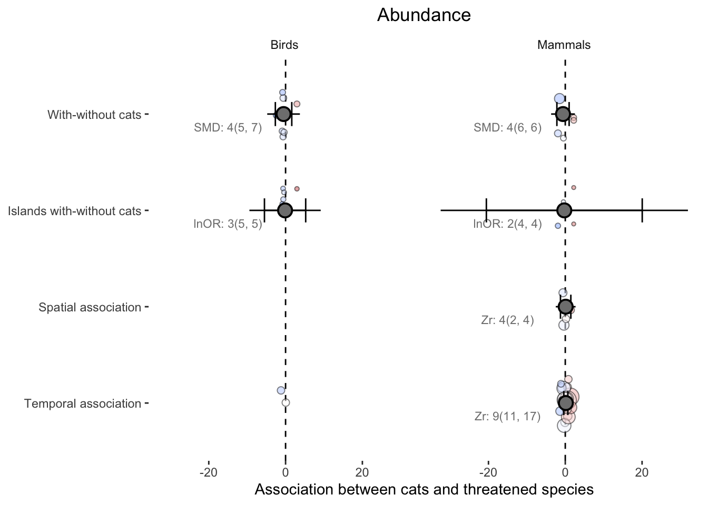
Body mass models
tidy_models[moderator == "log_mass" & only_dominant_effect_size == "no", ] term type estimate std.error statistic p.value lower_ci
<char> <char> <num> <num> <num> <num> <num>
1: intercept summary 0.632778630 1.9254587 0.328637863 0.7557470 -4.3167705
2: log_mass summary -0.336480608 0.8037311 -0.418648243 0.6852869 -2.1546466
3: intercept summary -0.072284174 2.5951755 -0.027853289 0.9791134 -7.2776465
4: log_mass summary 0.067619005 1.2239439 0.055246819 0.9572967 -2.7548006
5: intercept summary -0.103431382 1.6801627 -0.061560336 0.9522584 -3.9042235
6: log_mass summary 0.055645347 0.5771367 0.096416231 0.9243175 -1.1620067
7: intercept summary -0.776639601 1.7567742 -0.442082756 0.6688616 -4.7507390
8: log_mass summary 0.304191909 0.6084061 0.499981702 0.6238942 -0.9855714
9: intercept summary -0.119603061 1.0084614 -0.118599544 0.9085166 -2.4451192
10: log_mass summary -0.152769152 0.4440351 -0.344047464 0.7363119 -1.1120487
11: intercept summary -0.003785782 1.2884120 -0.002938332 0.9977375 -3.0503961
12: log_mass summary -0.211013066 0.6223610 -0.339052500 0.7404296 -1.5670213
upper_ci df overfit aic I2_Total I2_article_id
<num> <num> <char> <num> <num> <num>
1: 5.5823278 5 no 43.06615 42.11675 42.11675
2: 1.4816854 9 no 43.06615 42.11675 42.11675
3: 7.1330782 4 no 39.81587 48.63664 48.63664
4: 2.8900386 8 no 39.81587 48.63664 48.63664
5: 3.6973607 9 no 45.75504 86.36210 62.30075
6: 1.2732974 17 no 45.75504 86.36210 62.30075
7: 3.1974598 9 no 42.97770 86.05156 58.81832
8: 1.5939552 16 no 42.97770 86.05156 58.81832
9: 2.2059131 8 no 44.66867 59.24753 59.24753
10: 0.8065104 13 no 44.66867 59.24753 59.24753
11: 3.0428246 7 no 42.54669 62.93472 62.93472
12: 1.1449951 12 no 42.54669 62.93472 62.93472
I2_article_id/Effect_size_ID model_id
<num> <char>
1: 1.286438e-07 model_289
2: 1.286438e-07 model_289
3: 9.875565e-08 model_297
4: 9.875565e-08 model_297
5: 2.406135e+01 model_513
6: 2.406135e+01 model_513
7: 2.723324e+01 model_521
8: 2.723324e+01 model_521
9: 6.253426e-08 model_625
10: 6.253426e-08 model_625
11: 5.859155e-08 model_633
12: 5.859155e-08 model_633
analysis_group moderator class habitat_trait
<char> <char> <char> <char>
1: Abundance on islands with/without cats log_mass All All
2: Abundance on islands with/without cats log_mass All All
3: Abundance on islands with/without cats log_mass All All
4: Abundance on islands with/without cats log_mass All All
5: Abundance temporal association log_mass All All
6: Abundance temporal association log_mass All All
7: Abundance temporal association log_mass All All
8: Abundance temporal association log_mass All All
9: Abundance with/without cats log_mass All All
10: Abundance with/without cats log_mass All All
11: Abundance with/without cats log_mass All All
12: Abundance with/without cats log_mass All All
prey_range non_phylo_species phylo_species only_dominant_effect_size
<char> <char> <char> <char>
1: All no no no
2: All no no no
3: inside no no no
4: inside no no no
5: All no no no
6: All no no no
7: inside no no no
8: inside no no no
9: All no no no
10: All no no no
11: inside no no no
12: inside no no no
model_comparison_id random_effect
<char> <char>
1: model_comp_57 list(~1|article_id/Effect_size_ID)
2: model_comp_57 list(~1|article_id/Effect_size_ID)
3: model_comp_59 list(~1|article_id/Effect_size_ID)
4: model_comp_59 list(~1|article_id/Effect_size_ID)
5: model_comp_97 list(~1|article_id/Effect_size_ID)
6: model_comp_97 list(~1|article_id/Effect_size_ID)
7: model_comp_99 list(~1|article_id/Effect_size_ID)
8: model_comp_99 list(~1|article_id/Effect_size_ID)
9: model_comp_117 list(~1|article_id/Effect_size_ID)
10: model_comp_117 list(~1|article_id/Effect_size_ID)
11: model_comp_119 list(~1|article_id/Effect_size_ID)
12: model_comp_119 list(~1|article_id/Effect_size_ID)
exclusion
<char>
1: analysis_group == 'Abundance on islands with/without cats' & habitat_trait == 'All'
2: analysis_group == 'Abundance on islands with/without cats' & habitat_trait == 'All'
3: analysis_group == 'Abundance on islands with/without cats' & habitat_trait == 'All' & prey_range_primary == 'inside'
4: analysis_group == 'Abundance on islands with/without cats' & habitat_trait == 'All' & prey_range_primary == 'inside'
5: analysis_group == 'Abundance temporal association' & habitat_trait == 'All'
6: analysis_group == 'Abundance temporal association' & habitat_trait == 'All'
7: analysis_group == 'Abundance temporal association' & habitat_trait == 'All' & prey_range_primary == 'inside'
8: analysis_group == 'Abundance temporal association' & habitat_trait == 'All' & prey_range_primary == 'inside'
9: analysis_group == 'Abundance with/without cats' & habitat_trait == 'All'
10: analysis_group == 'Abundance with/without cats' & habitat_trait == 'All'
11: analysis_group == 'Abundance with/without cats' & habitat_trait == 'All' & prey_range_primary == 'inside'
12: analysis_group == 'Abundance with/without cats' & habitat_trait == 'All' & prey_range_primary == 'inside'
analysis_effect_size formula n_species n_articles n_obs
<char> <char> <int> <int> <int>
1: lnOR ~ log_mass 11 7 11
2: lnOR ~ log_mass 11 7 11
3: lnOR ~ log_mass 10 6 10
4: lnOR ~ log_mass 10 6 10
5: Zr ~ log_mass 13 11 19
6: Zr ~ log_mass 13 11 19
7: Zr ~ log_mass 12 11 18
8: Zr ~ log_mass 12 11 18
9: SMD ~ log_mass 13 10 15
10: SMD ~ log_mass 13 10 15
11: SMD ~ log_mass 12 9 14
12: SMD ~ log_mass 12 9 14
I2_Effect_size_ID I2_scientificName min_aic
<num> <num> <num>
1: NA NA 43.06615
2: NA NA 43.06615
3: NA NA 39.81587
4: NA NA 39.81587
5: NA NA 45.75504
6: NA NA 45.75504
7: NA NA 42.97770
8: NA NA 42.97770
9: NA NA 44.66867
10: NA NA 44.66867
11: NA NA 42.54669
12: NA NA 42.54669mass <- predictions[moderator == "log_mass" &
only_dominant_effect_size == "no" &
habitat_trait == "All" &
class == "All" &
prey_range == "All", ]
unique(mass$analysis_group_lab)[1] On islands with/without cats Temporal association
[3] With/without cats
6 Levels: Temporal association ... With/without cats# Back-transform mass.
mass[, mass_g := 10^as.numeric(term)]
mass$analysis_group_lab <- factor(mass$analysis_group_lab ,
levels = (c("With/without cats",
"On islands with/without cats",
"Temporal association")))
dat.plot <- dat[grepl("abundance", analysis_group, ignore.case = T) &
analysis_group %in% mass$analysis_group &
habitat_trait == "All"]
p.mass.abund <- ggplot()+
geom_hline(yintercept = 0, linetype = "dashed")+
geom_ribbon(data = mass[grepl("abundance", analysis_group, ignore.case = T)],
aes(x = mass_g,
ymin = lower_pi, ymax = upper_pi),
alpha = .5,
fill = "transparent",
color = "black", linetype = "dotted")+
geom_ribbon(data = mass[grepl("abundance", analysis_group, ignore.case = T)],
aes(x = mass_g,
ymin = lower_ci, ymax = upper_ci),
alpha = .5,
fill = "grey")+
geom_line(data = mass[grepl("abundance", analysis_group, ignore.case = T)],
aes(x = mass_g,
y = pred),
color = "black")+
geom_jitter(data = dat.plot,
aes(x = Mass_g_final, y = yi_analysis,
fill = yi_analysis,
size = 1/vi_analysis),
shape = 21,
alpha = .5)+
scale_fill_gradient2(low = "dodgerblue", high = "indianred",
midpoint = 0, mid = "white")+
ggtitle("Abundance")+
facet_wrap(~(analysis_group_lab), scales = "free_y",
ncol = 1,
labeller = as_labeller(
c("With/without cats" = "With-without cats",
"On islands with/without cats" = "Islands with-without cats",
"Temporal association"="Temporal association")))+
labs(x = expression(atop("Body mass", "(grams,"~log[10]~"scale)")),
y = "Association between cats and threatened species")+
guides(size = "none")+
scale_x_log10()+
theme_bw()+
theme(panel.grid = element_blank(),
axis.ticks.x = element_blank(),
plot.title = element_text(hjust = 0.5),
legend.position = "none",
strip.background = element_blank(),
panel.border = element_blank())
p.mass.abund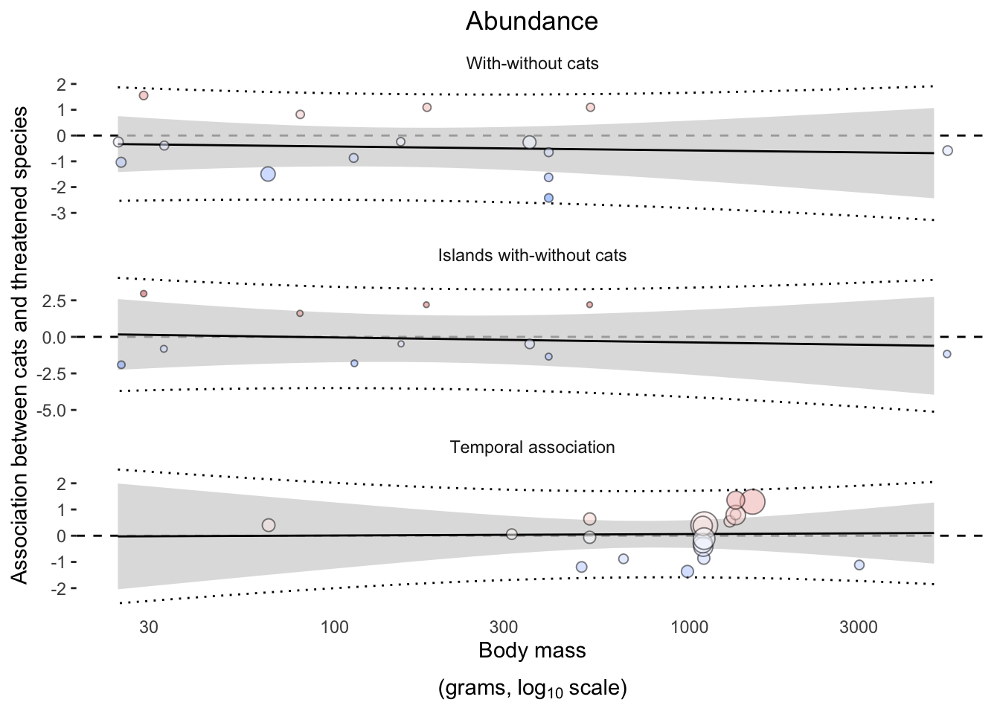
Habitat types and landform
habitat_pred <- predictions[habitat_trait != "All" &
class == "All" &
prey_range == "All" &
only_dominant_effect_size == "no"
]
unique(habitat_pred$analysis_group)
dat.plot <- dat[habitat_trait != "All" &
analysis_group %in% habitat_pred$analysis_group]
# Drop levels for which models didn't converge:
habitat_pred[, key := paste(analysis_group, habitat_trait)]
dat.plot[, key := paste(analysis_group, habitat_trait)]
dat.plot <- dat.plot[key %in% habitat_pred$key]
# Need to format habitat trait and category in dat and predictions
unique(dat.plot$habitat_trait)
unique(dat.plot$habitat_category)
dat.plot[, habitat_category := fcase(habitat_category == "locomotion_volant", "Locomotion",
habitat_category == "ground_or_burrow_resting_or_nesting", "Ground-nesting",
habitat_category == "Foraging_habitat_ground", "Ground-foraging",
habitat_category == "continent_island", "Landform")]
dat.plot[, habitat_fac_lvl := tstrsplit(habitat_trait, "[.]")[2]]
dat.plot[, habitat_fac_lvl := gsub("_", "-", habitat_fac_lvl)]
dat.plot[, habitat_fac_lvl := str_to_sentence(habitat_fac_lvl)]
dat.plot$habitat_category <- factor(dat.plot$habitat_category,
levels = c("Ground-nesting", "Ground-foraging",
"Locomotion", "Landform"))
habitat_pred.mrg <- merge(habitat_pred,
unique(dat.plot[, .(habitat_trait,
habitat_category,
habitat_fac_lvl)]),
by = "habitat_trait",
all.x = T,
all.y = F)
nrow(habitat_pred.mrg) == nrow(habitat_pred) # Must be TRUE
habitat.abund.1 <- ggplot()+
geom_vline(xintercept = 0, linetype = "dashed")+
geom_text(data = habitat_pred.mrg[grepl("abundance",
analysis_group, ignore.case = T) &
habitat_category %in% c("Ground-foraging", "Ground-nesting")],
aes(y = analysis_group_lab,
x = -10, vjust = 1.5,
label = string, group = habitat_fac_lvl,
color = habitat_fac_lvl),
position = position_dodgev(height = .5),
size = 2.5)+
geom_jitter(data = dat.plot[grepl("abundance", analysis_group, ignore.case = T) &
habitat_category %in% c("Ground-foraging", "Ground-nesting"), ],
aes(x = yi,
y = analysis_group_lab,
group = habitat_fac_lvl, fill = habitat_fac_lvl,
size = 1/vi_analysis),
position = position_jitterdodgev(jitter.height = .1,
jitter.width = 0,
dodge.height = .5
),
shape = 21,
alpha = .6)+
geom_errorbar(data = habitat_pred.mrg[grepl("abundance", analysis_group, ignore.case = T) &
habitat_category %in% c("Ground-foraging", "Ground-nesting")],
aes(y = analysis_group_lab, group = habitat_fac_lvl,
xmin = lower_ci, xmax = upper_ci),
position = position_dodgev(height = .5),
width = .25)+
geom_pointrange(data = habitat_pred.mrg[grepl("abundance", analysis_group, ignore.case = T) &
habitat_category %in% c("Ground-foraging", "Ground-nesting")],
aes(x = pred, y = analysis_group_lab,
group = habitat_fac_lvl, fill = habitat_fac_lvl,
xmin = lower_pi, xmax = upper_pi),
position = position_dodgev(height = .5),
shape = 21,
size = 1)+
facet_wrap(~habitat_category)+
scale_y_discrete(breaks = c("With/without cats",
"Before-after eradication", "Inside/outside exclosure",
"On islands with/without cats",
"Spatial association", "Temporal association"),
labels = c("With-without cats",
"Before-after eradication", "Inside-outside exclosure",
"Islands with-without cats",
"Spatial association", "Temporal association"))+
scale_color_manual(name = NULL,
values = c("Ground" = "#565554",
"Other" = "#2E86AB"))+
scale_fill_manual(name = NULL,
values = c("Ground" = "#565554",
"Other" = "#2E86AB"))+
ylab(NULL)+
xlab("Association between cats and\nthreatened species")+
ggtitle("Abundance")+
guides(size = "none", color = "none")+
theme_bw()+
theme(panel.grid = element_blank(),
plot.title = element_text(hjust = 0.5),
legend.position = "bottom",
strip.placement = "outside",
strip.background = element_blank(),
panel.border = element_blank())
habitat.abund.2 <- ggplot()+
geom_vline(xintercept = 0, linetype = "dashed")+
geom_text(data = habitat_pred.mrg[grepl("abundance",
analysis_group, ignore.case = T) &
!habitat_category %in% c("Ground-foraging", "Ground-nesting")],
aes(y = analysis_group_lab,
x = -7, vjust = 2.5,
label = string, group = habitat_fac_lvl,
color = habitat_fac_lvl),
position = position_dodgev(height = .5),
size = 2.5)+
geom_jitter(data = dat.plot[grepl("abundance", analysis_group, ignore.case = T) &
!habitat_category %in% c("Ground-foraging", "Ground-nesting"), ],
aes(x = yi,
y = analysis_group_lab,
group = habitat_fac_lvl, fill = habitat_fac_lvl,
size = 1/vi_analysis),
position = position_jitterdodgev(jitter.height = .1,
jitter.width = 0,
dodge.height = .5
),
shape = 21,
alpha = .6)+
geom_errorbar(data = habitat_pred.mrg[grepl("abundance", analysis_group, ignore.case = T) &
!habitat_category %in% c("Ground-foraging", "Ground-nesting")],
aes(y = analysis_group_lab, group = habitat_fac_lvl,
# color = term,
xmin = lower_ci, xmax = upper_ci),
position = position_dodgev(height = .5),
width = .25)+
geom_pointrange(data = habitat_pred.mrg[grepl("abundance", analysis_group, ignore.case = T) &
!habitat_category %in% c("Ground-foraging", "Ground-nesting")],
aes(x = pred, y = analysis_group_lab,
group = habitat_fac_lvl, fill = habitat_fac_lvl,
xmin = lower_pi, xmax = upper_pi),
position = position_dodgev(height = .5),
shape = 21,
# fill = "grey50",
size = 1)+
facet_wrap(~habitat_category)+
scale_y_discrete(breaks = c("With/without cats",
"Before-after eradication", "Inside/outside exclosure",
"On islands with/without cats",
"Spatial association", "Temporal association"),
labels = c("With-without cats",
"Before-after eradication", "Inside-outside exclosure",
"Islands with-without cats",
"Spatial association", "Temporal association"))+
scale_color_manual(name = NULL,
values = c("Non-volant" = "#565554",
"Volant" = "#2E86AB",
"Island" = "#F7B538",
"Mainland" = "#F24236"))+
scale_fill_manual(name = NULL,
values = c("Non-volant" = "#565554",
"Volant" = "#2E86AB",
"Island" = "#F7B538",
"Mainland" = "#F24236"))+
ylab(NULL)+
xlab("Association between cats and\nthreatened species")+
ggtitle("Abundance")+
guides(size = "none", color = "none")+
theme_bw()+
theme(panel.grid = element_blank(),
plot.title = element_text(hjust = 0.5),
legend.position = "bottom",
strip.placement = "outside",
strip.background = element_blank(),
panel.border = element_blank())
habitat.final <- habitat.abund.1 +
habitat.abund.2 +
plot_layout(nrow = 1)
habitat.finalhabitat.final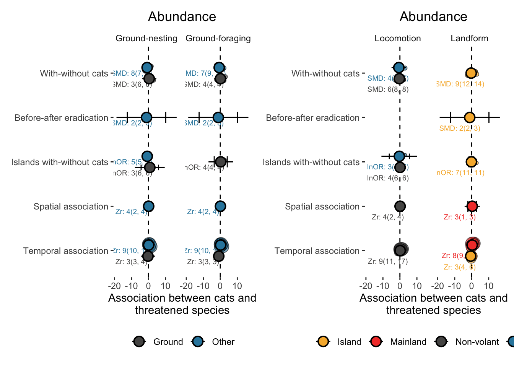
Dominant effect size only sensitivity analysis
intercepts <- predictions[moderator == "1" &
only_dominant_effect_size == "yes" &
habitat_trait == "All" &
class == "All" &
prey_range == "All"]
intercepts[, key := paste(analysis_effect_size, analysis_group)]
dat.plot[, key := paste(analysis_effect_size, analysis_group)]
#
p1.si <- ggplot()+
geom_vline(xintercept = 0, linetype = "dashed")+
geom_text(data = intercepts[grepl("abundance", analysis_group, ignore.case = T)],
aes(y = analysis_group_lab,
x = -3, vjust = 2,
label = string),
color = "grey50",
size = 3)+
geom_jitter(data = dat.plot[grepl("abundance", analysis_group, ignore.case = T) &
key %in% intercepts$key, ],
aes(x = yi, y = analysis_group_lab,
size = 1/vi_analysis, fill = yi_analysis),
shape = 21, #fill = "grey90",
height = 0.25, width = 0,
alpha = .5)+
scale_fill_gradient2(low = "dodgerblue", high = "indianred",
midpoint = 0, mid = "white")+
guides(size = "none", fill = "none")+
geom_errorbar(data = intercepts[grepl("abundance", analysis_group, ignore.case = T)],
aes(y = analysis_group_lab,
xmin = lower_ci, xmax = upper_ci),
width = .25)+
geom_pointrange(data = intercepts[grepl("abundance", analysis_group, ignore.case = T)],
aes(x = pred, y = analysis_group_lab,
xmin = lower_pi, xmax = upper_pi),
shape = 21, fill = "grey50",
size = 1)+
scale_y_discrete(breaks = c("With/without cats",
"Before-after eradication", "Inside/outside exclosure", "On islands with/without cats",
"Spatial association", "Temporal association"),
labels = c("With-without cats",
"Before-after eradication", "Inside-outside exclosure",
"Islands with-without cats",
"Spatial association", "Temporal association"))+
ggtitle("Abundance")+
ylab(NULL)+
xlab("Association between cats and threatened species")+
coord_cartesian(xlim = c(-4, 4))+
# xlab(NULL)+
# ylab("Short term abundance correlation (Zr)")+
guides(size = "none")+
theme_bw()+
theme(panel.grid = element_blank(),
plot.title = element_text(hjust = 0.5),
legend.position = "bottom",
strip.placement = "outside",
strip.background = element_blank(),
panel.border = element_blank())
p1.si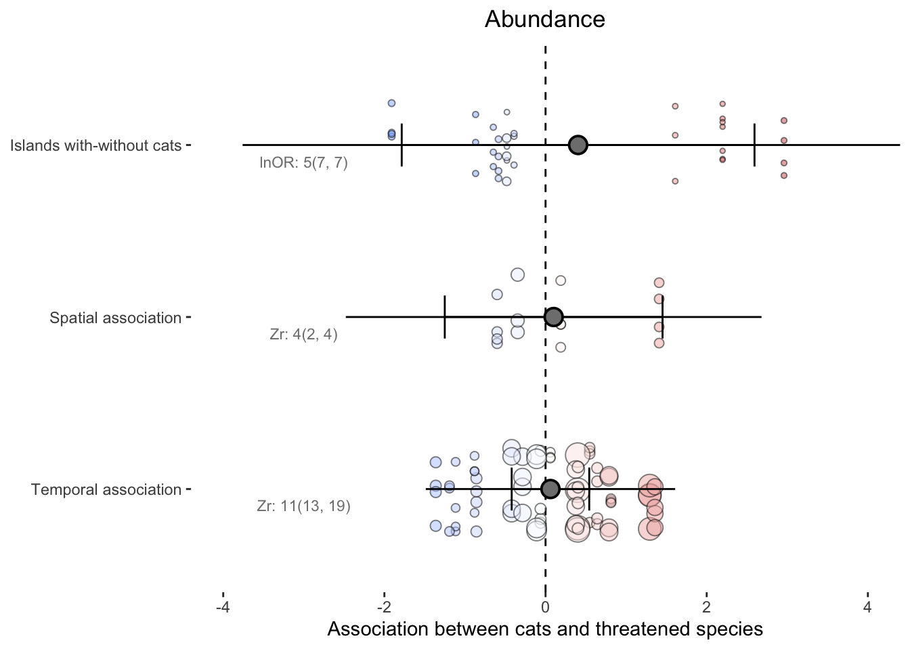
p2.si <- ggplot()+
geom_vline(xintercept = 0, linetype = "dashed")+
geom_text(data = intercepts[grepl("reproduction", analysis_group, ignore.case = T)],
aes(y = analysis_group_lab,
x = -15, vjust = 2,
label = string),
color = "grey50",
size = 3)+
geom_jitter(data = dat.plot[grepl("reproduction", analysis_group, ignore.case = T) &
key %in% intercepts$key, ],
aes(x = yi, y = analysis_group_lab,
size = 1/vi_analysis, fill = yi_analysis),
shape = 21, #fill = "grey90",
height = 0.25, width = 0,
alpha = .5)+
scale_fill_gradient2(low = "dodgerblue", high = "indianred",
midpoint = 0, mid = "white")+
guides(size = "none", fill = "none")+
geom_errorbar(data = intercepts[grepl("reproduction", analysis_group, ignore.case = T)],
aes(y = analysis_group_lab,
xmin = lower_ci, xmax = upper_ci),
width = .25)+
geom_pointrange(data = intercepts[grepl("reproduction", analysis_group, ignore.case = T)],
aes(x = pred, y = analysis_group_lab,
xmin = lower_pi, xmax = upper_pi),
shape = 21, fill = "grey50",
size = 1)+
scale_y_discrete(breaks = c("With/without cats",
"Before-after eradication", "Inside/outside exclosure", "On islands with/without cats",
"Spatial association", "Temporal association"),
labels = c("With-without cats",
"Before-after eradication", "Inside-outside exclosure",
"Islands with-without cats",
"Spatial association", "Temporal association"))+
ggtitle("Reproduction")+
ylab(NULL)+
xlab("Association between cats and bird reproduction")+
coord_cartesian(xlim = c(-30, 30))+
# xlab(NULL)+
# ylab("Short term abundance correlation (Zr)")+
guides(size = "none")+
theme_bw()+
theme(panel.grid = element_blank(),
plot.title = element_text(hjust = 0.5),
legend.position = "bottom",
strip.placement = "outside",
strip.background = element_blank(),
panel.border = element_blank())
p2.si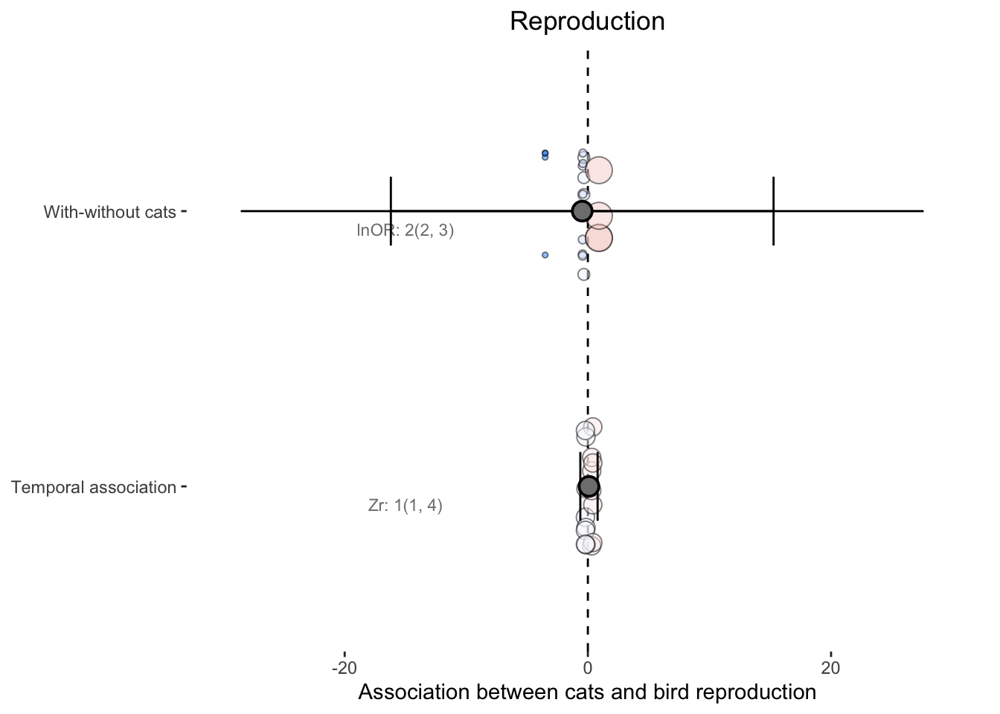
dominant.only <- p1.si + p2.si + plot_layout(guides = "collect", nrow = 2,
heights = c(3/5, 2/5)) +
plot_annotation(tag_levels = "A") &
theme(legend.position = "none")
dominant.only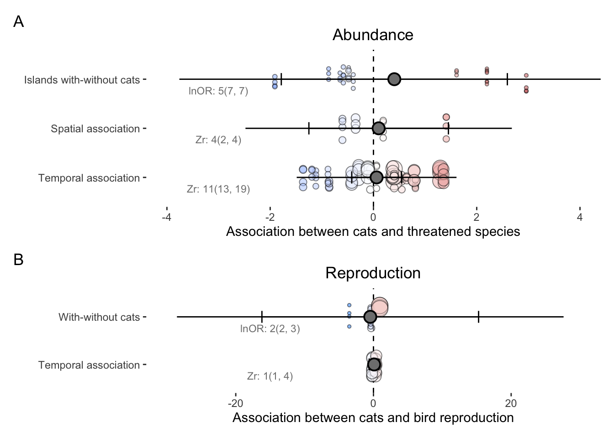
References
OpenTreeOfLife, Benjamin Redelings, Luna Luisa Sanchez Reyes, et al. 2019. Open Tree of Life Synthetic Tree. Version 12.3. Zenodo. https://doi.org/10.5281/zenodo.3937741.
Viechtbauer, Wolfgang. 2010. “Conducting Meta-Analyses in R with the metafor Package.” Journal of Statistical Software 36 (3): 1–48.